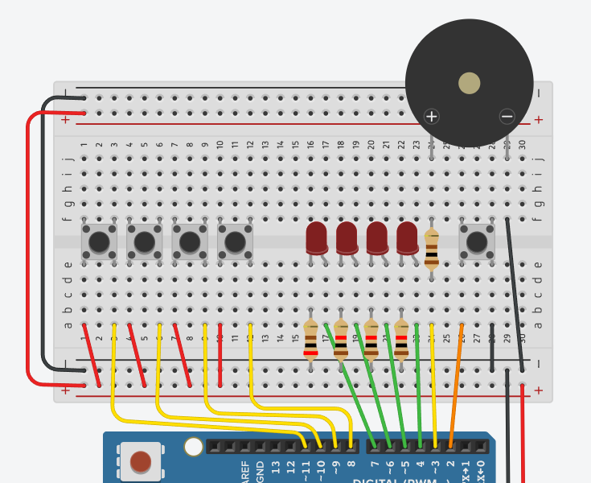

아두이노 피아노 타일 게임 만들기
인터럽트와 시분할 멀티태스킹 응용 실습
Table of Contents
1. 학습 목표
이 실습을 마치면 다음을 할 수 있게 됩니다.
millis()를 이용한 비블로킹(non-blocking) 시분할 멀티태스킹 구현attachInterrupt()로 여러 버튼 입력을 동시에 감시- 내부 풀업 저항(
INPUT_PULLUP)을 활용한 간결한 회로 구성 - 디바운싱(debouncing)을 코드와 회로 양쪽에서 처리
- 게임 상태를 상태 머신(state machine)으로 설계
tone()함수와 피에조로 음계와 멜로디 출력delay()를 한 번도 쓰지 않고 복잡한 동작을 구현
2. 게임 소개
2.1. 한 줄 요약
LED가 켜지면, 그 아래 버튼을 빨리 누르세요.
2.2. 게임 흐름
- 시작 버튼을 누른다 → 카운트다운(3-2-1) 후 게임 시작
- 4개 LED 중 1개가 무작위로 켜진다 (해당 음도 들림)
- 켜진 LED 바로 아래 버튼을 1.5초 안에 빠르게 누른다
- 맞히면 점수 +1, 다음 LED가 켜진다
- 틀리거나 늦으면 게임 오버
- 점수가 LED로 표시된다 → 시작 버튼으로 재시작
2.3. 난이도
10점마다 LED 점등 시간이 0.15초씩 짧아져요. 최소 0.3초까지 짧아지니까 후반엔 거의 반사신경 테스트가 됩니다.
3. 필요한 부품
| 부품 | 수량 | 용도 |
|---|---|---|
| 아두이노 우노 | 1 | 메인 컨트롤러 |
| 빨간 LED | 2 | 게임 LED (위치 1, 2) |
| 초록 LED | 1 | 게임 LED (위치 3) |
| 파란 LED (또는 빨강) | 1 | 게임 LED (위치 4) |
| 택트 스위치 | 5 | 게임 4개 + 시작 1개 |
| 피에조 (수동 부저) | 1 | 음계와 멜로디 출력 |
| 330Ω 저항 | 4 | LED 전류 제한 |
| 100Ω 저항 | 1 | 피에조 보호 |
| 점퍼 케이블 | 다수 | 연결용 |
| 브레드보드 | 1 | 회로 구성 |
내부 풀업을 사용하므로 버튼용 외부 저항(10kΩ)은 필요 없습니다. 피에조는 능동 부저와 다릅니다. 능동 부저는 고정된 한 가지 소리만 나지만, 피에조는 다양한 음계를 표현할 수 있어 진짜 피아노 게임이 가능해요.
4. 1단계: 회로 구성
4.1. 핀 배치 설계

우노의 외부 인터럽트 핀은 D2, D3 두 개뿐이라서, 게임 버튼 4개를 모두 외부 인터럽트로 받을 수 없습니다. 대신 핀 체인지 인터럽트(Pin Change Interrupt) 를 활용합니다.
| 핀 | 연결 | 비고 |
|---|---|---|
| D2 | 시작 버튼 | 외부 인터럽트 (INT0) |
| D3 | 피에조 (+) | PWM 출력 (tone) |
| D4 | LED 1 | 디지털 출력 |
| D5 | LED 2 | 디지털 출력 |
| D6 | LED 3 | 디지털 출력 |
| D7 | LED 4 | 디지털 출력 |
| D8 | 게임 버튼 1 | 핀 체인지 인터럽트 (PCINT0) |
| D9 | 게임 버튼 2 | 핀 체인지 인터럽트 (PCINT1) |
| D10 | 게임 버튼 3 | 핀 체인지 인터럽트 (PCINT2) |
| D11 | 게임 버튼 4 | 핀 체인지 인터럽트 (PCINT3) |
4.2. 회로 연결 방법
4.2.1. LED 연결
각 LED의 긴 다리(+) → 330Ω 저항 → 아두이노 디지털 핀 LED의 짧은 다리(-) → GND
4.2.2. 버튼 연결 (내부 풀업 방식)
내부 풀업을 사용하므로 매우 간단합니다.
아두이노 핀 ---- 버튼 ---- GND
평소엔 내부 저항으로 핀이 5V(HIGH)로 유지되고, 버튼을 누르면 GND와 연결되어 LOW가 됩니다. 누름 = LOW, 안 누름 = HIGH 로 신호가 반전된다는 점만 주의하세요.
4.2.3. 피에조 연결
D3 ---- 100Ω 저항 ---- 피에조(+) ---- 피에조(-) ---- GND
100Ω 저항은 피에조의 순간 전류로부터 아두이노 핀을 보호하는 역할입니다. 피에조는 극성이 약해서 +/- 방향이 헷갈리면 그냥 바꿔서 꽂아도 동작해요.
4.3. 배선 색상 권장
브레드보드에 꽂을 때 점퍼선 색깔을 다음처럼 통일하면 디버깅이 훨씬 편해집니다.
| 색깔 | 용도 |
|---|---|
| 빨강 | 5V (이번엔 거의 사용 안 함) |
| 검정 | GND |
| 노랑 | LED 신호선 |
| 초록 | 버튼 신호선 |
| 주황 | 피에조 신호선 |
5. 2단계: 비블로킹 깜빡임 - 기초 다지기
본격적인 게임을 만들기 전에, millis() 로 LED를 깜빡이는 연습부터
합니다. delay() 를 절대 쓰지 않는 게 규칙이에요.
5.1. 핵심 개념: millis() 패턴
unsigned long previousTime = 0;
const unsigned long interval = 500; // 500ms 간격
void loop() {
unsigned long currentTime = millis();
if (currentTime - previousTime >= interval) {
previousTime = currentTime;
// 여기에 주기적으로 실행할 코드
}
}
currentTime - previousTime 형태로 비교하는 이유는, millis() 가
약 50일 후 오버플로우(0으로 리셋)되어도 이 뺄셈은 올바르게
동작하기 때문입니다. currentTime >= previousTime + interval 처럼
쓰면 안 됩니다.
5.2. 실습 2-1: 4개 LED 독립적으로 깜빡이기
각 LED가 서로 다른 주기로 깜빡이게 만들어봅시다.
const int LED_PINS[4] = {4, 5, 6, 7};
const unsigned long INTERVALS[4] = {200, 350, 500, 700};
unsigned long lastToggle[4] = {0, 0, 0, 0};
bool ledState[4] = {false, false, false, false};
void setup() {
for (int i = 0; i < 4; i++) {
pinMode(LED_PINS[i], OUTPUT);
}
}
void loop() {
unsigned long now = millis();
for (int i = 0; i < 4; i++) {
if (now - lastToggle[i] >= INTERVALS[i]) {
lastToggle[i] = now;
ledState[i] = !ledState[i];
digitalWrite(LED_PINS[i], ledState[i]);
}
}
}
업로드 후, 4개 LED가 각자의 리듬으로 깜빡이는 걸 관찰하세요. 이게 시분할 멀티태스킹의 본질 입니다.
6. 3단계: 인터럽트로 버튼 받기
6.1. 내부 풀업 설정
내부 풀업을 사용하려면 pinMode 에서 INPUT_PULLUP 을 지정합니다.
pinMode(START_BTN, INPUT_PULLUP);
for (int i = 0; i < 4; i++) {
pinMode(GAME_BTNS[i], INPUT_PULLUP);
}
이렇게 하면 아두이노 내부의 약 20~50kΩ 저항이 자동으로 5V와 연결되어, 외부 저항 없이도 안정적인 신호를 받을 수 있어요.
6.2. 외부 인터럽트 (시작 버튼)
D2 핀의 시작 버튼은 외부 인터럽트를 씁니다. 풀업 방식에서는 누르는
순간 HIGH → LOW로 떨어지므로 FALLING 트리거를 사용합니다.
const int START_BTN = 2;
volatile bool startPressed = false;
volatile unsigned long lastInterruptTime = 0;
void startISR() {
unsigned long now = millis();
if (now - lastInterruptTime < 50) return; // 디바운싱
lastInterruptTime = now;
startPressed = true;
}
void setup() {
pinMode(START_BTN, INPUT_PULLUP);
attachInterrupt(digitalPinToInterrupt(START_BTN),
startISR, FALLING);
}
volatile 키워드는 컴파일러에게 “이 변수는 ISR에서 바뀔 수 있으니
최적화하지 마라”고 알려줍니다. ISR 안에서 수정되는 모든 변수에 꼭
붙여야 합니다.
6.3. 핀 체인지 인터럽트 (게임 버튼 4개)
D8~D13 핀은 PCINT0 그룹에 속해서, 이 핀들 중 하나라도 변하면 같은 ISR이 호출됩니다. ISR 안에서 어떤 핀이 변했는지 직접 확인해야 해요. 풀업 방식이라 LOW일 때가 눌린 상태 입니다.
#include <avr/io.h>
#include <avr/interrupt.h>
const int GAME_BTNS[4] = {8, 9, 10, 11};
volatile int pressedButton = -1;
void setupPinChangeInterrupt() {
PCICR |= (1 << PCIE0); // 포트 B의 PCINT 활성화
PCMSK0 |= (1 << PCINT0); // D8
PCMSK0 |= (1 << PCINT1); // D9
PCMSK0 |= (1 << PCINT2); // D10
PCMSK0 |= (1 << PCINT3); // D11
}
ISR(PCINT0_vect) {
unsigned long now = millis();
if (now - lastInterruptTime < 50) return; // 디바운싱
lastInterruptTime = now;
for (int i = 0; i < 4; i++) {
if (digitalRead(GAME_BTNS[i]) == LOW) { // 풀업: LOW = 누름
pressedButton = i;
break;
}
}
}
6.4. 디바운싱 이해하기
택트 스위치는 누를 때 물리적으로 떨려서, 한 번 눌렀는데도 인터럽트가 여러 번 발생할 수 있습니다. 이걸 막는 게 디바운싱이에요.
위 코드의 if (now - lastInterruptTime < 50) return; 부분이 핵심
입니다. 인터럽트가 발생한 시각을 기록해두고, 50ms 안에 또 들어오면
무시합니다.
7. 4단계: 피에조로 음계 출력
7.1. 피에조 vs 능동 부저
| 종류 | 음높이 조절 | 사용법 |
|---|---|---|
| 능동 부저 | 불가능 | 전압만 주면 한 음만 남 |
| 피에조 | 가능 | tone() 으로 주파수 지정 |
피에조를 쓰면 진짜 음계가 나오므로, 게임이 훨씬 흥미로워집니다.
7.2. 음계 정의
이번 게임에서는 4개 LED에 도-미-솔-도(C 메이저 코드) 를 할당해서, 누를 때마다 화음이 만들어지는 효과를 냅니다.
const int NOTES[4] = {
262, // C4 (도)
330, // E4 (미)
392, // G4 (솔)
523 // C5 (높은 도)
};
7.3. 비블로킹 tone() 사용
tone(핀, 주파수, 시간) 으로 지정 시간만큼 소리를 낼 수 있지만,
이 시간 동안 다른 작업이 멈춥니다. 대신 종료 시각을 직접 관리해서
비블로킹으로 만듭니다.
unsigned long buzzerStopTime = 0;
bool buzzerActive = false;
void playTone(int freq, int duration) {
tone(PIEZO, freq);
buzzerStopTime = millis() + duration;
buzzerActive = true;
}
void updateBuzzer() {
if (buzzerActive && millis() >= buzzerStopTime) {
noTone(PIEZO);
buzzerActive = false;
}
}
// loop() 매번 updateBuzzer() 호출
7.4. 멜로디 시퀀스
여러 음을 순서대로 재생하려면 배열에 음과 길이를 저장해두고, 매 루프마다 다음 음 재생 시각을 체크합니다. 이것도 비블로킹이에요.
// 시작 멜로디: 도-미-솔-도 (상승)
int notes[] = {262, 330, 392, 523};
int durations[] = {120, 120, 120, 240};
playMelody(notes, durations, 4);
8. 5단계: 상태 머신 설계
복잡한 게임 로직을 if 문 더미로 짜면 금방 망가집니다. 대신
상태 머신 으로 설계합니다.
8.1. 게임의 5가지 상태
| 상태 | 설명 | 다음 상태로 전이 조건 |
|---|---|---|
| IDLE | 시작 대기 (LED 순환 점등) | 시작 버튼 누름 |
| COUNTDOWN | 3-2-1 카운트다운 | 3초 경과 |
| PLAYING | 게임 중 (LED 켜고 입력 대기) | 정답/오답/시간초과 |
| GAMEOVER | 게임 오버 멜로디 + 깜빡임 | 2.5초 경과 |
| SHOWSCORE | 점수 표시 (LED 깜빡임) | 시작 버튼 누름 |
8.2. 상태 머신 코드 골격
enum GameState {
STATE_IDLE,
STATE_COUNTDOWN,
STATE_PLAYING,
STATE_GAME_OVER,
STATE_SHOW_SCORE
};
GameState currentState = STATE_IDLE;
unsigned long stateStartTime = 0;
void changeState(GameState newState) {
currentState = newState;
stateStartTime = millis();
}
void loop() {
switch (currentState) {
case STATE_IDLE: handleIdle(); break;
case STATE_COUNTDOWN: handleCountdown(); break;
case STATE_PLAYING: handlePlaying(); break;
case STATE_GAME_OVER: handleGameOver(); break;
case STATE_SHOW_SCORE: handleShowScore(); break;
}
}
각 상태마다 자기 일만 처리하고, 조건이 충족되면 다음 상태로 넘기는 구조예요. 코드가 깔끔해지고 버그도 줄어듭니다.
9. 6단계: 전체 코드
이제 모든 조각을 합쳐서 완성된 피아노 타일 게임 코드입니다. 그대로 복사해서 업로드하면 동작합니다.
9.1. 메인 코드
// ============================================
// 아두이노 피아노 타일 게임
// 피에조 + 내부 풀업 + 인터럽트 + 시분할 멀티태스킹
// ============================================
#include <avr/io.h>
#include <avr/interrupt.h>
// ----- 핀 정의 -----
const int LED_PINS[4] = {4, 5, 6, 7};
const int GAME_BTNS[4] = {8, 9, 10, 11};
const int START_BTN = 2;
const int PIEZO = 3;
// ----- 음계 정의 (Hz) -----
// 도(C4), 미(E4), 솔(G4), 도(C5) - C 메이저 코드
const int NOTES[4] = {262, 330, 392, 523};
// 효과음용 추가 음
const int NOTE_CORRECT_LOW = 880; // A5
const int NOTE_CORRECT_HIGH = 1047; // C6
const int NOTE_WRONG_HIGH = 200;
const int NOTE_WRONG_LOW = 100;
const int NOTE_COUNTDOWN = 440; // A4
const int NOTE_START = 880; // A5
// ----- 게임 상태 (enum 먼저 선언) -----
enum GameState {
STATE_IDLE,
STATE_COUNTDOWN,
STATE_PLAYING,
STATE_GAME_OVER,
STATE_SHOW_SCORE
};
// ----- 함수 프로토타입 -----
// (GameState를 매개변수로 받는 함수는 enum 뒤에 선언 필요)
void changeState(GameState newState);
void allLedsOff();
void playTone(int freq, int duration);
void updateBuzzer();
void updateMelody();
void playMelody(int notes[], int durations[], int length);
void startMelody();
void gameOverMelody();
void pickNewLed();
void handleIdle();
void handleCountdown();
void handlePlaying();
void handleGameOver();
void handleShowScore();
GameState currentState = STATE_IDLE;
unsigned long stateStartTime = 0;
// ----- 인터럽트 변수 -----
volatile bool startPressed = false;
volatile int pressedButton = -1;
volatile unsigned long lastInterruptTime = 0;
// ----- 게임 변수 -----
int score = 0;
int currentLed = -1;
unsigned long ledOnTime = 0;
unsigned long ledTimeLimit = 1500;
// ----- 카운트다운 변수 -----
int countdownNumber = 3;
unsigned long lastCountdownTick = 0;
// ----- 부저 변수 -----
unsigned long buzzerStopTime = 0;
bool buzzerActive = false;
// ----- 멜로디 재생 변수 (비블로킹) -----
const int MELODY_MAX = 8;
int melodyNotes[MELODY_MAX];
int melodyDurations[MELODY_MAX];
int melodyLength = 0;
int melodyIndex = 0;
unsigned long melodyNextTime = 0;
bool melodyPlaying = false;
// ============================================
// 인터럽트 서비스 루틴
// 풀업 방식: 누름 = LOW, 안 누름 = HIGH
// ============================================
void startISR() {
unsigned long now = millis();
if (now - lastInterruptTime < 50) return;
lastInterruptTime = now;
startPressed = true;
}
ISR(PCINT0_vect) {
unsigned long now = millis();
if (now - lastInterruptTime < 50) return;
lastInterruptTime = now;
// 풀업: LOW일 때가 눌린 상태
for (int i = 0; i < 4; i++) {
if (digitalRead(GAME_BTNS[i]) == LOW) {
pressedButton = i;
break;
}
}
}
// ============================================
// 유틸리티 함수
// ============================================
void changeState(GameState newState) {
currentState = newState;
stateStartTime = millis();
}
void allLedsOff() {
for (int i = 0; i < 4; i++) {
digitalWrite(LED_PINS[i], LOW);
}
}
void playTone(int freq, int duration) {
tone(PIEZO, freq);
buzzerStopTime = millis() + duration;
buzzerActive = true;
}
void updateBuzzer() {
if (buzzerActive && millis() >= buzzerStopTime) {
noTone(PIEZO);
buzzerActive = false;
}
}
// ============================================
// 멜로디 시퀀스 재생 (비블로킹)
// ============================================
void playMelody(int notes[], int durations[], int length) {
if (length > MELODY_MAX) length = MELODY_MAX;
for (int i = 0; i < length; i++) {
melodyNotes[i] = notes[i];
melodyDurations[i] = durations[i];
}
melodyLength = length;
melodyIndex = 0;
melodyNextTime = millis();
melodyPlaying = true;
}
void updateMelody() {
if (!melodyPlaying) return;
if (millis() < melodyNextTime) return;
if (melodyIndex >= melodyLength) {
melodyPlaying = false;
noTone(PIEZO);
return;
}
int freq = melodyNotes[melodyIndex];
int dur = melodyDurations[melodyIndex];
if (freq > 0) {
tone(PIEZO, freq);
} else {
noTone(PIEZO);
}
melodyNextTime = millis() + dur;
melodyIndex++;
}
// 시작 멜로디: 도-미-솔-도 (상승)
void startMelody() {
int notes[] = {262, 330, 392, 523};
int durations[] = {120, 120, 120, 240};
playMelody(notes, durations, 4);
}
// 게임 오버 멜로디: 도-시-라-솔 (하강)
void gameOverMelody() {
int notes[] = {523, 466, 415, 349};
int durations[] = {180, 180, 180, 400};
playMelody(notes, durations, 4);
}
void pickNewLed() {
currentLed = random(0, 4);
digitalWrite(LED_PINS[currentLed], HIGH);
ledOnTime = millis();
playTone(NOTES[currentLed], 120);
}
// ============================================
// 상태별 핸들러
// ============================================
void handleIdle() {
// 모든 LED를 순환하며 깜빡임 (대기 애니메이션)
unsigned long elapsed = millis() - stateStartTime;
int activeLed = (elapsed / 200) % 4;
for (int i = 0; i < 4; i++) {
digitalWrite(LED_PINS[i], i == activeLed ? HIGH : LOW);
}
if (startPressed) {
startPressed = false;
score = 0;
countdownNumber = 3;
lastCountdownTick = millis();
ledTimeLimit = 1500;
allLedsOff();
startMelody();
changeState(STATE_COUNTDOWN);
}
}
void handleCountdown() {
// 시작 멜로디가 끝날 때까지 대기
if (melodyPlaying) return;
unsigned long now = millis();
if (now - lastCountdownTick >= 1000) {
lastCountdownTick = now;
if (countdownNumber > 0) {
// 카운트다운 표시: 숫자에 해당하는 LED 개수 켜기
allLedsOff();
for (int i = 0; i < countdownNumber; i++) {
digitalWrite(LED_PINS[i], HIGH);
}
playTone(NOTE_COUNTDOWN, 200);
countdownNumber--;
} else {
allLedsOff();
playTone(NOTE_START, 400);
pressedButton = -1;
pickNewLed();
changeState(STATE_PLAYING);
}
}
}
void handlePlaying() {
unsigned long now = millis();
// 시간 초과 체크
if (now - ledOnTime >= ledTimeLimit) {
changeState(STATE_GAME_OVER);
return;
}
// 버튼 입력 체크
if (pressedButton >= 0) {
int btn = pressedButton;
pressedButton = -1;
if (btn == currentLed) {
// 정답!
score++;
digitalWrite(LED_PINS[currentLed], LOW);
// 점수가 짝수면 높은 음, 홀수면 낮은 음
int correctTone = (score % 2 == 0)
? NOTE_CORRECT_HIGH
: NOTE_CORRECT_LOW;
playTone(correctTone, 80);
// 10점마다 난이도 상승
if (score % 10 == 0 && ledTimeLimit > 300) {
ledTimeLimit -= 150;
}
pickNewLed();
} else {
// 오답!
changeState(STATE_GAME_OVER);
}
}
}
void handleGameOver() {
unsigned long elapsed = millis() - stateStartTime;
// 시작 즉시: 모든 LED 켜고 하강 멜로디 시작
if (elapsed < 100) {
for (int i = 0; i < 4; i++) digitalWrite(LED_PINS[i], HIGH);
gameOverMelody();
}
// 100ms~2500ms: LED 깜빡임
else if (elapsed < 2500) {
bool on = ((elapsed / 200) % 2) == 0;
for (int i = 0; i < 4; i++) digitalWrite(LED_PINS[i], on);
}
// 2500ms 이후: 점수 표시 상태로
else {
Serial.print("Score: ");
Serial.println(score);
allLedsOff();
changeState(STATE_SHOW_SCORE);
}
}
void handleShowScore() {
// 점수를 LED 개수로 표현
unsigned long elapsed = millis() - stateStartTime;
int tens = score / 10;
int ones = score % 10;
// 0.5초 주기로: 10의 자리 ↔ 1의 자리 번갈아 표시
bool showTens = (elapsed / 500) % 2 == 0;
int ledCount = showTens ? tens : ones;
ledCount = constrain(ledCount, 0, 4);
for (int i = 0; i < 4; i++) {
digitalWrite(LED_PINS[i], i < ledCount ? HIGH : LOW);
}
if (startPressed) {
startPressed = false;
changeState(STATE_IDLE);
}
}
// ============================================
// 설정 및 메인 루프
// ============================================
void setup() {
Serial.begin(9600);
randomSeed(analogRead(A0));
// LED 핀
for (int i = 0; i < 4; i++) {
pinMode(LED_PINS[i], OUTPUT);
}
// 버튼 핀: 내부 풀업 활성화
pinMode(START_BTN, INPUT_PULLUP);
for (int i = 0; i < 4; i++) {
pinMode(GAME_BTNS[i], INPUT_PULLUP);
}
// 피에조 핀
pinMode(PIEZO, OUTPUT);
// 외부 인터럽트 (시작 버튼)
// 풀업이므로 누를 때 HIGH→LOW: FALLING 트리거
attachInterrupt(digitalPinToInterrupt(START_BTN),
startISR, FALLING);
// 핀 체인지 인터럽트 (게임 버튼, D8~D11)
PCICR |= (1 << PCIE0);
PCMSK0 |= (1 << PCINT0) | (1 << PCINT1) |
(1 << PCINT2) | (1 << PCINT3);
Serial.println("Piano Tile Game Ready!");
Serial.println("Press start button to begin.");
changeState(STATE_IDLE);
}
void loop() {
// 모든 상태에서 비블로킹 사운드 처리
updateMelody();
updateBuzzer();
// 현재 상태에 따라 핸들러 호출
switch (currentState) {
case STATE_IDLE: handleIdle(); break;
case STATE_COUNTDOWN: handleCountdown(); break;
case STATE_PLAYING: handlePlaying(); break;
case STATE_GAME_OVER: handleGameOver(); break;
case STATE_SHOW_SCORE: handleShowScore(); break;
}
}
10. 7단계: 동작 확인 및 디버깅
10.1. 업로드 전 부품별 테스트
전체 코드를 한 번에 올리지 말고, 부품을 하나씩 검증하는 게 디버깅하기 쉬워요.
10.1.1. 테스트 1: 피에조 음계 확인
const int PIEZO = 3;
const int SCALE[] = {262, 294, 330, 349, 392, 440, 494, 523};
void setup() {
pinMode(PIEZO, OUTPUT);
}
void loop() {
for (int i = 0; i < 8; i++) {
tone(PIEZO, SCALE[i]);
delay(400);
}
noTone(PIEZO);
delay(1000);
}
“도레미파솔라시도”가 깨끗하게 들리면 OK. 모든 음이 비슷하게 들리면 능동 부저가 꽂혔을 가능성이 있으니 부품 확인.
10.1.2. 테스트 2: 버튼 입력 확인
const int GAME_BTNS[4] = {8, 9, 10, 11};
const int START_BTN = 2;
void setup() {
Serial.begin(9600);
pinMode(START_BTN, INPUT_PULLUP);
for (int i = 0; i < 4; i++) {
pinMode(GAME_BTNS[i], INPUT_PULLUP);
}
}
void loop() {
Serial.print("Start:");
Serial.print(digitalRead(START_BTN));
Serial.print(" Btns:");
for (int i = 0; i < 4; i++) {
Serial.print(digitalRead(GAME_BTNS[i]));
}
Serial.println();
delay(200);
}
시리얼 모니터를 열고, 누르지 않으면 1, 누르면 0이 나오는지 확인.
10.1.3. 테스트 3: LED 점등 확인
const int LED_PINS[4] = {4, 5, 6, 7};
void setup() {
for (int i = 0; i < 4; i++) {
pinMode(LED_PINS[i], OUTPUT);
}
}
void loop() {
for (int i = 0; i < 4; i++) {
digitalWrite(LED_PINS[i], HIGH);
delay(300);
digitalWrite(LED_PINS[i], LOW);
}
}
4개 LED가 순서대로 깜빡이는지 확인.
10.2. 전체 동작 체크리스트
세 가지 부품 테스트가 다 통과하면 메인 코드를 올립니다.
[ ]전원이 들어오면 LED 4개가 순환 점등하는가? (IDLE)[ ]시작 버튼을 누르면 도-미-솔-도 멜로디가 들리는가?[ ]카운트다운(3-2-1) LED 표시와 효과음이 나오는가?[ ]카운트다운 후 LED 1개가 무작위로 켜지고 음이 들리는가?[ ]켜진 LED 아래 버튼을 누르면 점수가 올라가는가?[ ]다른 버튼을 누르면 게임 오버 멜로디가 나오는가?[ ]게임 오버 후 LED로 점수가 깜빡이는가?[ ]시리얼 모니터에 점수가 출력되는가?[ ]점수가 올라갈수록 LED 점등 시간이 짧아지는가?
10.3. 자주 발생하는 문제와 해결
10.3.1. 컴파일 에러: ’GameState’ was not declared
원인: enum 정의보다 위쪽에서 GameState 타입을 쓰는 함수를
참조하려고 함.
해결: enum GameState {...}; 선언 바로 다음에 함수 프로토타입
void changeState(GameState newState); 가 있는지 확인.
10.3.2. 버튼을 한 번 눌렀는데 여러 번 반응함
원인: 디바운싱 부족. 채터링이 50ms보다 길게 발생.
해결: ISR 안의 lastInterruptTime 비교값을 100ms로 늘려보세요.
10.3.3. 음이 안 나거나 모두 비슷한 소리만 남
원인: 피에조 대신 능동 부저가 꽂혀 있음.
해결: 부품을 확인하고 피에조로 교체. 또는 100Ω 보호 저항이 없으면 추가.
10.3.4. 시작 버튼이 안 먹힘
원인: D2 핀 INPUT_PULLUP 설정 누락, 또는 FALLING 대신 RISING
사용.
해결: pinMode(START_BTN, INPUT_PULLUP); 와
attachInterrupt(..., FALLING); 둘 다 확인.
10.3.5. 너무 빨라서 못 따라감 / 너무 느림
해결: 전체 코드의 ledTimeLimit 초기값(1500)을 2000으로 늘리거나,
난이도 감소량 150을 100으로 줄여서 천천히 어려워지게 조정.
11. 8단계: 확장 아이디어
기본 게임이 완성되면, 다음 기능을 추가해보세요.
11.1. 난이도 선택 모드
가변저항(10kΩ)을 A0에 연결해서, 시작 전에 돌려서 초기 난이도를
조절. analogRead(A0) 값을 ledTimeLimit 에 매핑.
int rawValue = analogRead(A0);
ledTimeLimit = map(rawValue, 0, 1023, 500, 3000);
11.2. 최고 점수 저장
EEPROM에 최고 점수를 저장해서, 매번 부팅해도 기록이 유지되게.
#include <EEPROM.h>
int highScore;
void setup() {
EEPROM.get(0, highScore);
}
void saveHighScore() {
if (score > highScore) {
highScore = score;
EEPROM.put(0, highScore);
}
}
11.3. 사이먼 가라사대 모드
랜덤 단일 LED 대신, 점점 길어지는 LED 순서를 외워서 따라 누르는 모드. 시퀀스 저장용 배열 추가, 멜로디 시스템 재사용.
11.4. 자유 연주 모드
IDLE 상태에서 게임 버튼 4개가 곧 피아노 건반이 되도록. 버튼을 누르면 해당 음이 길게 울림. 4개 음으로 간단한 곡 연주 가능.
11.5. 하이스코어 팡파레
새 최고 점수 갱신 시 화려한 멜로디 재생. playMelody() 함수에
8음 정도의 시퀀스 전달.
11.6. 2인 대전 모드
LED 2개씩 두 플레이어에게 배정. 먼저 일정 점수에 도달하는 사람 승. LED 색과 음으로 누구 차례인지 표시.
12. 학습 정리
이 프로젝트에서 사용한 핵심 기법을 정리합니다.
12.1. 멀티태스킹 (시분할)
millis()기반 비블로킹 시간 측정- 각 상태/작업이 독립적인 타이머 변수 사용
delay()절대 금지- 멜로디, 부저, LED, 게임 로직이 모두 동시에 진행
12.2. 인터럽트
- 외부 인터럽트 (
attachInterrupt) - D2 핀 - 핀 체인지 인터럽트 (
PCICR,PCMSK0) - D8~D11 volatile키워드로 ISR 변수 보호- 디바운싱으로 채터링 방지
- ISR은 짧게! 무거운 작업은 main loop에서
12.3. 내부 풀업
INPUT_PULLUP으로 외부 저항 제거- 신호 반전: 누름 = LOW, 안 누름 = HIGH
- 외부 인터럽트는
FALLING트리거
12.4. 상태 머신
- 복잡한 로직을 명확한 상태들로 분해
- 각 상태는 자기 일과 전이 조건만 책임
enum으로 상태 정의,switch로 분기
12.5. 비블로킹 사운드 제어
tone()의 duration 파라미터 대신 직접 종료 시각 관리- 멜로디 배열 + 인덱스로 시퀀스 재생
updateBuzzer(),updateMelody()를 매 루프마다 호출
13. 마치며
이 게임을 완성하셨다면, 아두이노로 실시간 시스템 을 다루는 기본기를 갖추신 거예요. 같은 패턴(상태 머신 + 비블로킹 + 인터럽트)은 로봇 제어, 센서 네트워크, IoT 디바이스 등 거의 모든 임베디드 프로젝트에 적용됩니다.
다음 단계로는 LCD/OLED 디스플레이를 추가해서 점수와 게임 상태를 표시하거나, Processing으로 PC 화면에 게임 UI를 표시하는 시도를 권합니다.
14. 부록 A: 회로도 (텍스트)
Arduino Uno R3
+---------------+
시작 버튼 --->| D2 (INT0) |
피에조(+) <---| D3 (PWM) |
LED 1 <---| D4 |
LED 2 <---| D5 |
LED 3 <---| D6 |
LED 4 <---| D7 |
게임 버튼 1 --->| D8 (PCINT0) |
게임 버튼 2 --->| D9 (PCINT1) |
게임 버튼 3 --->| D10 (PCINT2) |
게임 버튼 4 --->| D11 (PCINT3) |
| |
| GND --+ |
+---------------+
각 LED: D핀 ---[330Ω]---|>|--- GND
각 버튼: D핀 ---/ /--- GND (내부 풀업, 외부 저항 없음)
피에조: D3 ---[100Ω]---(+)피에조(-)--- GND
15. 부록 B: 음계 주파수 참고표
옥타브 4~5 음계 주파수입니다. 게임에 다른 음을 쓰고 싶을 때 참고.
| 음 | 옥타브 4 | 옥타브 5 |
|---|---|---|
| 도 (C) | 262 | 523 |
| 도# (C#) | 277 | 554 |
| 레 (D) | 294 | 587 |
| 레# (D#) | 311 | 622 |
| 미 (E) | 330 | 659 |
| 파 (F) | 349 | 698 |
| 파# (F#) | 370 | 740 |
| 솔 (G) | 392 | 784 |
| 솔# (G#) | 415 | 831 |
| 라 (A) | 440 | 880 |
| 라# (A#) | 466 | 932 |
| 시 (B) | 494 | 988 |
16. 부록 C: 자주 쓰는 인터럽트 패턴
16.1. 패턴 1: 단순 플래그 설정
volatile bool flag = false;
void myISR() {
flag = true;
}
void loop() {
if (flag) {
flag = false;
// 처리
}
}
16.2. 패턴 2: 시간 기록
volatile unsigned long eventTime = 0;
void myISR() {
eventTime = millis();
}
16.3. 패턴 3: 디바운싱 포함
volatile unsigned long lastTime = 0;
void myISR() {
unsigned long now = millis();
if (now - lastTime < 50) return;
lastTime = now;
// 실제 처리
}
16.4. 패턴 4: 데이터 수집
volatile int pulseCount = 0;
void myISR() {
pulseCount++;
}
void loop() {
noInterrupts();
int count = pulseCount;
pulseCount = 0;
interrupts();
// count 사용
}
noInterrupts()/interrupts() 로 임계 영역을 보호해서 ISR과 main
사이의 데이터 경쟁을 방지합니다.